전기기능장 (2013-07-21 기출문제)
1과목: 임의구분
1. 314[H]의 자기 인덕턴스에 220[V], 60[㎐]의 교류 전압을 가하였을 때 흐르는 전류는?
- 약 1.86[A]
- 약 1.86×10-3[A]
- 약 1.17×10-1[A]
- 약. 1.17×10-3[A]
(정답률: 85%)

2. 마이크로컴퓨터에서 isolated I/O 방식과 비교하여 memory-mapped I/O 방식의 특징으로 옳은 것은?
- 하드웨어가 복잡하다.
- 기억장치 명령과 입출력 명령을 구별하여 사용한다.
- 기억장치의 주소 공간이 줄어든다.
- 입출력 장치들의 주소 공간이 기억장치 주소 공간과 별도로 할당된다.
(정답률: 48%)
3. 권선형 유도전동기 기동법으로 알맞은 것은?
- 직입 기동법
- 2차 저항 기동법
- 콘도르퍼 방식
- Y-△ 기동법
(정답률: 76%)
4. 그림과 같은 다이오드 메트릭스 회로에서 A1, A0에 가해진 data가 1, 0이면, B3, B2, B1, B0에 출력되는 data는?
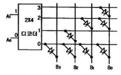
- 1111
- 1010
- 1011
- 0100
(정답률: 64%)
5. 다음 중 앤트런스 캡의 주된 사용 장소는?
- 부스 덕트의 끝부분의 마감재
- 저압 인입선 공사시 전선관 공사로 넘어갈 때 전선관의 끝부분
- 케이블 트레이 끝부분 마감재
- 케이블 헤드를 시공할 때 케이블 헤드의 끝부분
(정답률: 87%)
6. 옥내 전반 조명에서 바닥면의 조도를 균일하게 하기 위하여 등 간격은 등 높이의 얼마가 적당한가?(단, 등 간격은 S, 등 높이는 H 이다.)
- S≤0.5
- S≤H
- S≤1.5H
- S≤2H
(정답률: 85%)
7. 일반적으로 큐비클형이라 하며, 점유면적이 좁고 운전보수에 안전하므로 공장, 빌딩 등의 전기실에 많이 사용되며 조립형, 장갑형이 있는 배전반은?
- 데드 프런트식 배전반
- 폐쇄식 배전반
- 라이브 프런트식 배전반
- 철제 수직형 배전반
(정답률: 87%)
8. 전선의 접속법에 대한 설명 중 옳지 않은 것은?
- 접속부분은 절연전선의 절연물과 동등 이상의 절연 효력이 있도록 충분히 피복한다.
- 전선의 전기저항이 증가되도록 접속하여야 한다.
- 전선의 세기를 20% 이상 감소시키지 않는다.
- 접속 부분은 접속관, 기타의 기구를 사용한다.
(정답률: 87%)
9. 0.6/1 KV 비닐절연 비닐 캡타이어 케이블의 약호로서 옳은 것은?
- VCT
- CVT
- VV
- VTF
(정답률: 75%)
10. RL 병렬회로의 양단에 e=Emsin(wt+θ)[V]의 전압이 가해졌을 때 소비되는 유효전력은?
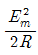
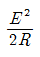
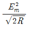
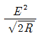
(정답률: 62%)
11. 유전체에서 전자분극은 어떤 이유에서 일어나는가?
- 단결정매질에서 전자운과 핵간의 상대적인 변위에 의함
- 화합물에서 (+)이온과 (-)이온간의 상대적인 변위에 의함
- 화합물에서 전자운과 (+)이온간의 상대적인 변위에 의함
- 영구 전기쌍극자의 전계방향 배열에 의함
(정답률: 67%)
12. Z-80 CPU에서 프로그램 카운터(PC)의 값을 바꿀 수 있는 명령이 아닌 것은?
- CALL 명령
- JR 명령
- CP 명령
- JP 명령
(정답률: 51%)
13. 8비트 마이크로프로세서의 동작에서 1회의 명령을 인출해 낼 때 또는 1명령당 실행 기간이나 메모리로부터 명령어 레지스터에 명령을 꺼내는 시간을 무엇이라 하는가?
- 머신 사이클
- 접근 시간
- 실행 사이클
- 메모리 사이클
(정답률: 41%)
14. 변압기의 누설 리액턴스를 줄이는 가장 효과적인 방법은?
- 코일의 단면적을 크게 한다.
- 권선을 동심 배치한다.
- 권선을 분할하여 조립한다.
- 철심의 단면적을 크게 한다.
(정답률: 89%)
15. 교차 결합 NAND 게이크 회로는 RS 플립플롭을 구성하며, 비동기 FF 또는 RS NANAD 래치라고도 하는데 허용되지 않는 입력조건은?
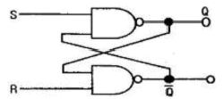
- S=0, R=0
- S=1, R=0
- S=0, R=1
- S=1, R=1
(정답률: 49%)
16. 다음 회로는 3상 전파 정류기(컨버터)의 회로도를 나타내고 있다. 점선 부분의 역할로 가장 적당한 것은?
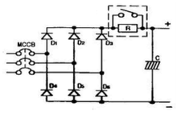
- 강압파형 개선회로
- 전류 증폭회로
- 돌입전류 억제회로
- 전류 차단회로
(정답률: 75%)
17. 소맥분, 전분 기타의 가연성 분진이 존재하는 곳의 저압 옥내배선 공사방법으로 적합하지 않는 것은?
- 합성수지관 공사
- 금속관 공사
- 가요전선관 공사
- 케이블 공사
(정답률: 87%)
18. 22.9[kV] 수전설비에 50[A]의 부하전류가 흐른다. 이수전계통에 변류기(CT) 60/5[A], 과전류계전기(OCR)를 시설하여 120[%]의 과부하에서 차단기가 동작되게 하려면, 과전류계전기 전류 탭의 설정값은?
- 4[A]
- 5[A]
- 6[A]
- 7[A]
(정답률: 70%)
19. 정격전류 30[A]의 전동기 1대와 정격전류 5[A]의 전열기 2대에 공급하는 저압옥내 간선을 보호할 과전류차단기의 정격전류는 몇 [A]인가?
- 40[A]
- 55[A]
- 70[A]
- 100[A]
(정답률: 55%)
20. MOSFET의 드레인(drain)전류 제어는?
- 소스(source) 단자의 전류로 제어
- 드레인(drain)과 소스(source)간 전압으로 제어
- 게이트(gate)와 소스(source)간 전류로 제어
- 게이트(gate)와 소스(source)간 전압으로 제어
(정답률: 73%)
2과목: 임의구분
21. 다음 중 배전 변전소에서 전력용 콘덴서를 설치하는 주된 목적은?
- 변압기 보호
- 선로 보호
- 역률 개선
- 코로나손 방지
(정답률: 88%)
22. 수전용 유입차단기의 정격전류가 500[A]일 때 접지선의 공칭 단면적[mm2]은 다음 중 어느 것을 선정하면 적당한가?
- 25
- 35
- 50
- 70
(정답률: 53%)
23. 정격 150[kVA], 철손1[kW], 전부하 동손이 4[kW]인 단상 변압기의 최대효율[%]은?
- 약 96.8[%]
- 약 97.4[%]
- 약 98.0[%]
- 약 98.6[%]
(정답률: 57%)
24. 그림과 같은 RLC 병렬 공진회로에 관한 설명 중 옳지 않은 것은?
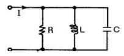
- 공진시 입력 어드미턴스는 매우 작아진다.
- 공진시 L 또는 C를 흐르는 전류는 입력 전류 크기의 Q배가 된다.
- 공진 주파수 이하에서의 입력 전류는 전압보다 위상이 뒤진다.
- L이 작을수록 전류확대비가 작아진다.
(정답률: 61%)
25. 사이리스터의 턴오프(Turn-off) 조건은?
- 게이트에 역방향 전류를 흘린다.
- 게이트에 역방향 전압을 가한다.
- 게이트에 순방향 전류를 0으로 한다.
- 애노드 전류를 유지전류 이하로 한다.
(정답률: 68%)
26. 2진수(110010.111)2를 8진수로 변환한 값은?
- (62.7)8
- (32.7)8
- (62.6)8
- (32.6)8
(정답률: 79%)
27. 다음 진리표에 해당하는 논리회로는?
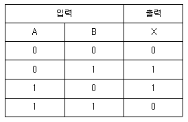
- AND회로
- EX-NOR회로
- NAND회로
- EX-OR회로
(정답률: 69%)
28. 2n의 입력선과 n개의 출력선을 가지고 있으며, 출력은 입력값에 대한 2진코드 혹은 BCD 코드를 발생하는 장치는?
- 디코더
- 인코더
- 멀티플렉서
- 매트릭스
(정답률: 58%)
29. 전가산기(Full adder) 회로의 기본적인 구성은?
- 입력 2개, 출력 2개로 구성
- 입력 2개, 출력 3개로 구성
- 입력 3개, 출력 2개로 구성
- 입력 3개, 출력 3개로 구성
(정답률: 70%)
30. 주소 공간이 20[bit]이고 각 주소당 저장되는 데이터의 크기가 8[bit]일 때 주기억 장치의 용량은?
- 1[Mbyte]
- 2[Mbyte]
- 4[Mbyte]
- 8[Mbyte]
(정답률: 53%)
31. 반도체 트리거소자로서 자기회복 능력이 있는 것은?
- GTO
- SSS
- SCS
- SCR
(정답률: 78%)
32. 일반적으로 제2종 접지공사에 있어서의 접지선은 공칭 단면적 몇 [mm2] 이상의 연동선을 사용하여야 하는가?
- 4[mm2]
- 10[mm2]
- 16[mm2]
- 35[mm2]
(정답률: 76%)
33. 단권 변압기에 대한 설명으로 옳지 않은 것은?
- 1차 권선과 2차 권선의 일부가 공통으로 되어 있다.
- 3상에는 사용할 수 없는 단점이 있다.
- 동일 출력에 대하여 사용 재료 및 손실이 적고 효율이 높다.
- 단권 변압기는 권선비가 1에 가까울수록 보통 변압기에 비하여 유리하다.
(정답률: 83%)
34. R[Ω]인 3개의 저항을 같은 전원에 △결선으로 접속시킬때와 Y결선으로 접속시킬 때 선전류의 크기비(
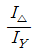
)는?- 1/3
- √6
- √3
- 3
(정답률: 62%)
35. 6극 60[㎐]인 3상 유도 전동기의 슬립이 4[%] 일 때이 전동기의 회전수는 몇 [rpm]인가?
- 952
- 1152
- 1352
- 1552
(정답률: 77%)
36. 다음 논리식 중 옳은 표현은?
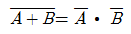
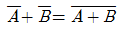
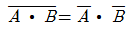
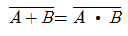
(정답률: 88%)
37. 보조기억장치의 역할이 아닌 것은?
- 대량 데이터의 기억
- 프로그램 보관
- 데이터의 고속처리
- 데이터의 영구보존
(정답률: 58%)
38. 최대눈금 150[V], 내부저항 20[kΩ]인 직류전압계가 있다. 이 전압계의 측정범위를 600[V]로 확대하기 위하여 외부에 접속하는 직렬저항은 얼마로 하면 되는가?
- 20[kΩ]
- 40[kΩ]
- 50[kΩ]
- 60[kΩ]
(정답률: 62%)
39. 자기 인덕턴스 50[mH]인 코일에 흐르는 전류가 0.01초 사이에 5[A]에서 3[A]로 감소하였다. 이 코일에 유기되는 기전력[V]은?
- 10[V]
- 15[V]
- 20[V]
- 25[V]
(정답률: 70%)
40. 어떤 교류회로에 전압을 가하니 90°만큼 위상이 앞선전류가 흘렀다. 이 회로는?
- 유도성
- 무유도성
- 용량성
- 저항 성분
(정답률: 83%)
3과목: 임의구분
41. 220/380[V] 겸용 3상 유도전동기의 리드선은 몇 가닥을 인출하는가?
- 3
- 4
- 6
- 8
(정답률: 88%)
42. 권선형 3상 유도전동기에서 2차측 저항을 2배로 하면 그 최대 토크는 어떻게 되는가?
- 1/2로 줄어든다.
- √2배로 된다.
- 2배로 된다.
- 불변이다.
(정답률: 81%)
43. 단상 220[V], 60[㎐]의 정현파 교류전압을 점호각60°로 반파 위상제어 정류하여 직류로 변환하고자 한다. 순저항 부하시 평균 출력전압은 약 몇 [V]인가?
- 74[V]
- 84[V]
- 92[V]
- 110[V]
(정답률: 51%)
44. 광원은 점등시간이 진행됨에 따라서 특성이 약간 변화한다. 방전램프의 경우 초기 100시간의 떨어짐이 특히 심한데 이와 같은 특성은 무엇인가?
- 수명특성
- 동정특성
- 온도특성
- 연색성
(정답률: 70%)
45. 동기발전기에서 전기자 전류가 무부하 유도 기전력보다 π/2[rad]만큼 뒤진경우의 전기자반작용은?
- 교차자화작용
- 자화작용
- 감자작용
- 편자작용
(정답률: 85%)
46. 평균반지름이 1[㎝]이고, 권수가 500회인 환상솔레노이드 내부의 자계가 200[AT/m]가 되도록 하기 위해서는 코일에 흐르는 전류를 약 몇 [A]로 하여야 하는가?
- 0.015
- 0.025
- 0.035
- 0.045
(정답률: 65%)
47. 다링톤(Darlington)형 바이폴러 트랜지스터의 전류증폭률은?
- 1~3
- 10~30
- 30~100
- 100~1000
(정답률: 73%)
48. 고압가공 전선로로부터 수전하는 수용가의 인입구에 시설하는 피뢰기의 접지공사에 있어서 접지선이 피뢰기 접지공사의 전용의 것이면 접지저항은 얼마까지 허용되는가?
- 5[Ω]
- 10[Ω]
- 30[Ω]
- 75[Ω]
(정답률: 61%)
49. 직류전동기에서 전기자에 가해 주는 전원전압을 낮추어서 전동기의 유도 기전력을 전원전압보다 높게 하여 제동하는 방법은?
- 맴돌이전류제동
- 발전제동
- 역전제동
- 회생제동
(정답률: 78%)
50. 동기전동기의 특징에 관한 설명으로 옳은 것은?
- 저속도에서 유도전동기에 비해 효율이 나쁘다.
- 기동 토크가 크다.
- 필요에 따라 진상전류를 흘릴 수 있다.
- 직류전원이 필요 없다.
(정답률: 69%)
51. 양수량 10[m3/min], 총양정 20[m]의 펌프용 전동기의 용량[kW]은? (단, 여유계수 1.1, 폄프효율은 75[%]이다.)
- 36
- 48
- 72
- 144
(정답률: 55%)
52. 화학류 저장장소에 있어서의 전기설비 시설에 대한 기준으로 적합한 것은?
- 전선로의 대지전압 400[V] 이하일 것
- 전기기계기구는 개방형일 것
- 인입구의 전선은 비닐절연전선으로 노출배선으로 한다.
- 지락차단장치 또는 경보장치를 시설한다.
(정답률: 80%)
53. 합성수지관 공사에 의한 저압 옥내배선의 시설기준으로 옳지 않은 것은?
- 전선은 옥외용 비닐 절연전선을 사용할 것
- 습기가 많은 장소에 시설하는 경우 방습장치를 할 것
- 전선은 합성수지관 안에서 접속점이 없도록 할 것
- 관의 지지점간의 거리는 1.5[m] 이하로 할 것
(정답률: 77%)
54. 하나 이상의 부하를 한 전원에서 다른 전원으로 자동절활 할 수 있는 장치는?
- ASS
- ACB
- LBS
- ATS
(정답률: 76%)
55. 모집단으로부터 공간적, 시간적으로 간격을 일정하게 하여 샘플링 하는 방식은?
- 단순랜덤 샘플링(simple random sampling)
- 2단계샘플링(two-stage sampling)
- 취락샘플링(cluster sampling)
- 계통샘플링(systematic sampling)
(정답률: 79%)
56. 예방보전(Preventive Maintenance)의 효과가 아닌 것은?
- 기계의 수리비용이 감소한다.
- 생산시스템의 신뢰도가 향상된다.
- 고장으로 인한 중단시간이 감소한다.
- 잦은 정비로 인해 제조원단위가 증가한다.
(정답률: 87%)
57. 제품공정도를 작성할 때 사용되는 요소(명칭)가 아닌 것은?
- 가공
- 검사
- 정체
- 여유
(정답률: 82%)
58. 부적합수 관리도를 작성하기 위해 Σc=559, Σn=222를 구하였다. 시료의 크기가 부분군마다 일정하지 않기 때문에 u 관리도를 사용하기로 하였다. n=10일 경우 u 관리도의 UCL값은 약 얼마인가?
- 4.023
- 2.518
- 0.502
- 0.252
(정답률: 49%)
59. 작업방법 개선의 기본 4원칙을 표현한 것은?
- 층별 - 랜덤 - 재배열 - 표준화
- 배제 - 결합 - 랜덤 - 표준화
- 층별 - 랜덤 - 표준화 - 단순화
- 배제 - 결합 - 재배열 - 단순화
(정답률: 69%)
60. 이항분포(Binomial distribution)의 특징에 대한 설명으로 옳은 것은?
- P = 0.01 일 때는 평균치에 대하여 좌ㆍ우 대칭이다.
- P ≤ 0.1이고, nP = 0.1 ~ 10 일때는 포송 분포에 근사한다.
- 부적합품의 출현 개수에 대한 표준편차는 D(x) = nP이다.
- P ≤ 0.5이고, nP ≤ 5일 때는 정규 분포에 근사한다.
(정답률: 76%)